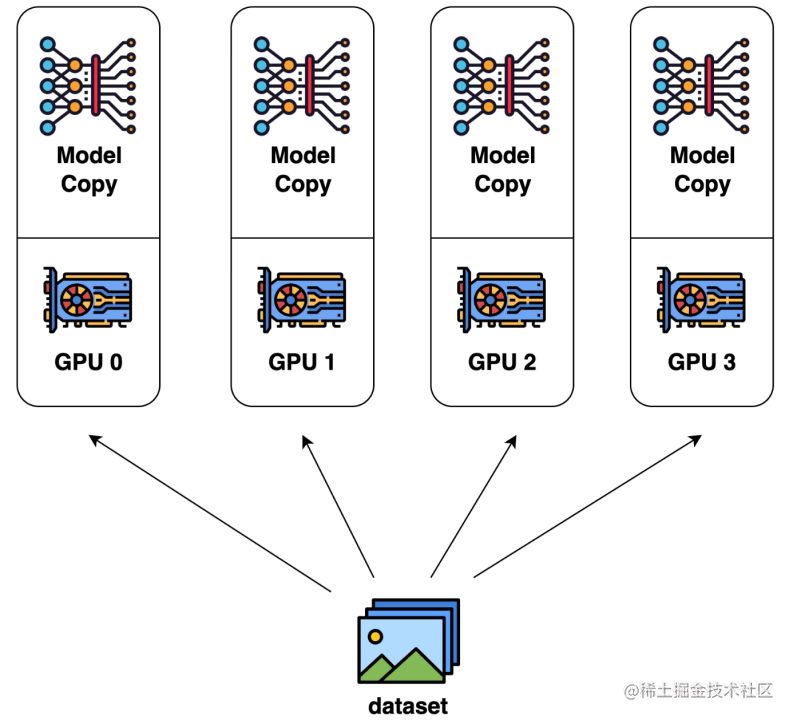
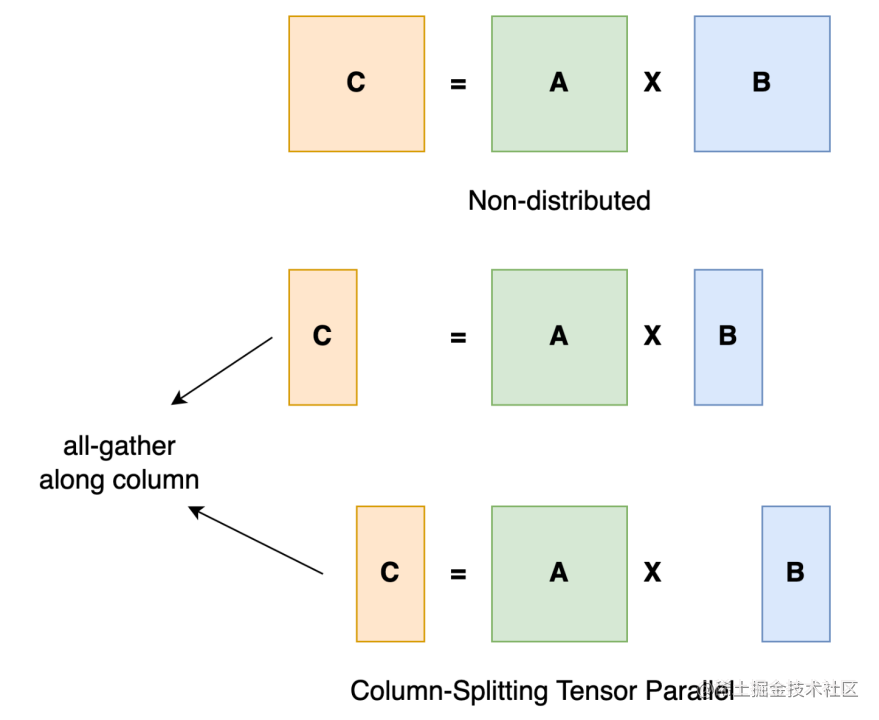
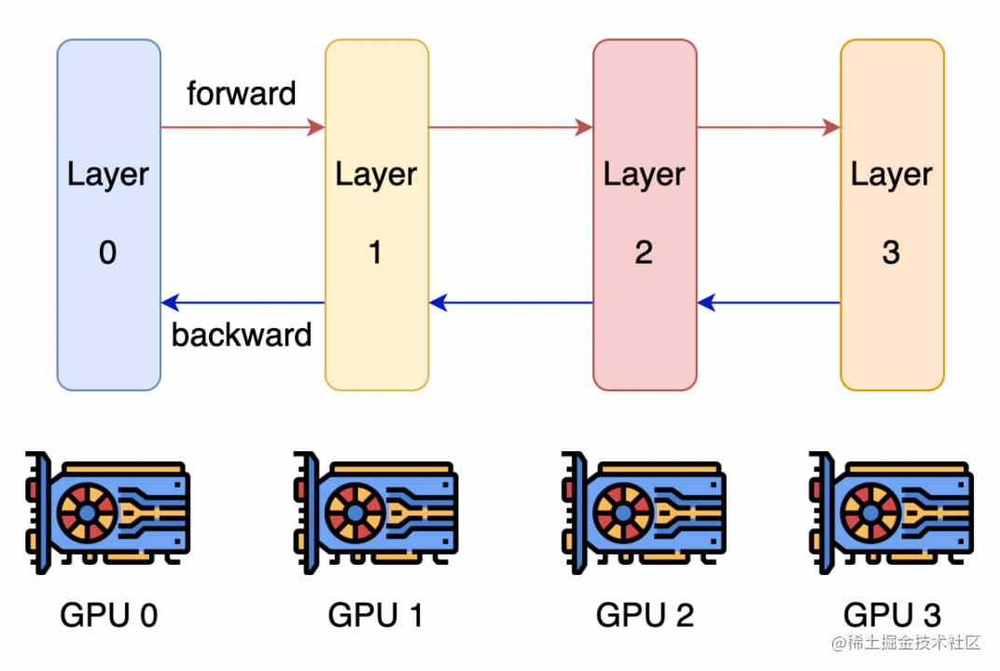
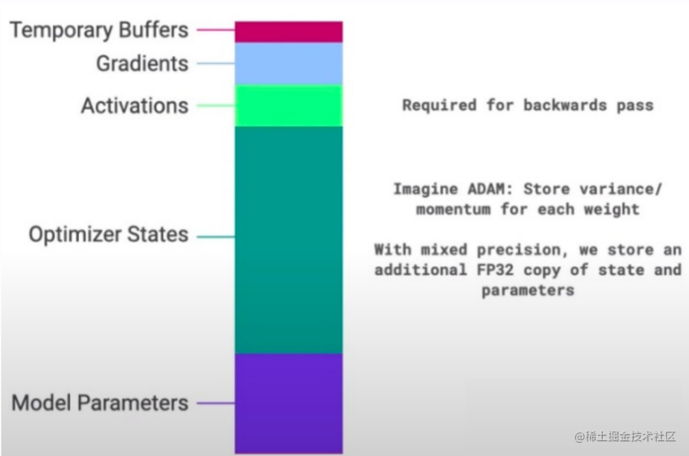
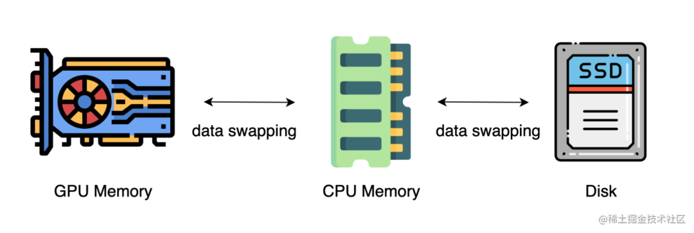
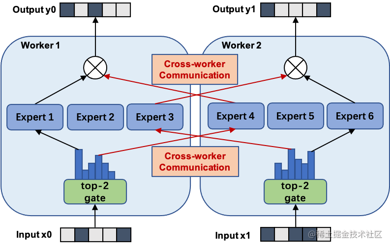

转载自：用通俗易懂的方式讲解大模型分布式训练并行技术：概述_大模型训练 资源分配-CSDN博客
前言：
利用AI集群，深度学习算法更好地从大量数据中高效地训练出性能优良的大模型，这是分布式机器学习的首要目标。 为了实现该目标，一般需要根据硬件资源与数据/模型规模的匹配情况，考虑对计算任务、训练数据和模型进行划分，从而进行分布式存储和分布式训练。因此，分布式训练相关技术值得我们进行深入分析其背后的机理。
1. 数据并行
数据并行是最常见也是最简单的并行形式。在数据并行中，数据集被分割成几个碎片，被分配到不同设备上。相当于沿 Batch 维度对训练过程进行并行化。每个设备将持有一个完整的模型副本，并在分配的数据集碎片上进行训练。 在反向传播之后，不同卡存储的模型梯度将被同时减少，以便在不同卡上保持同步。
典型的数据并行实现：PyTorch DDP。

2. 模型并行
在数据并行训练中，一个明显的特点是每个 GPU 持有整个模型权重的副本。这带来了冗余。另一种并行模式是模型并行，即模型被分割并分布在一个设备阵列上。通常有两种类型的模型并行：张量并行和流水线并行。
张量并行是在一个操作中进行并行计算，如：矩阵-矩阵乘法；而流水线并行是在各层之间进行并行计算。因此，从另一个角度来看，张量并行可以被看作是层内并行（对层内的矩阵参数做切割），流水线并行可以被看作是层间并行（对不同模块做切割）。
2.1 张量并行
将一个张量（如矩阵）沿特定维度分成 N 块，每个设备只持有整个张量的 1/N，在不影响计算图的正确性（如矩阵乘）的情况下并行进行计算，这就是张量并行。
以一般的矩阵乘法为例，假设我们有 。我们可以将 列分割成 ，每个设备持有一列。然后，我们将 与每个设备上 B 中的每一列相乘，我们将得到 。此刻，每个设备持有一部分的结果，例如设备(rank=0)持有 。为了确保结果的正确性，我们需要把不同设备上的答案沿列维串联张量。通过这种方式，我们能够将张量分布在设备上，同时确保计算流程保持正确。

2.2 流水线并行
流水线并行的核心思想是，将模型按层分割成若干块，将每块都交给一个设备进行处理。在前向传播过程中，每个设备将中间的激活传递给下一个阶段；而在后向传播过程中，每个设备将输入张量的梯度传回给前一个流水线阶段。挺直观的，和 OS 的流水线差不多。

3. 优化器相关并行
模型训练的过程中，GPU上需要进行存储的参数除了模型本身的参数，还有优化器状态、激活函数的输出值、梯度以及一些零时的 Buffer 等。模型参数仅占模型训练过程中所有数据的一部分，当进行混合精度运算时，其中模型状态参数(优化器状态 + 梯度+ 模型参数）占到了一大半以上。
因此，我们需要想办法去除模型训练过程中的冗余数据，而优化器相关的并行就是一种去除冗余数据的并行方案。目前这种并行最流行的方法是 ZeRO（即零冗余优化器），即对模型的状态量进行分片存储。

4. 异构系统并行
上述的方法中，通常需要大量的 GPU 来训练一个大型模型。然而，人们常常忽略一点，与 GPU 相比，CPU 的内存要大得多。在一个典型的服务器上，CPU 可以轻松拥有几百GB甚至上TB的内存，而每张 GPU 卡通常只有 48 或 80 GB的内存。
最近的进展是依靠 CPU 甚至是磁盘来训练大型模型。主要的想法是，在不使用张量时，将其卸载回 CPU 内存或磁盘。通过使用异构系统架构，有可能在一台机器上容纳一个巨大的模型。但感觉会巨慢。

5. MOE 萌え并行 / 专家并行
模型规模的扩展会导致训练成本显著增加，计算资源的限制成为了大规模密集模型训练的瓶颈。为了解决这个问题，一种基于稀疏 MoE 层的深度学习模型架构被提出，将大模型拆分成多个小模型(专家，expert)， 每轮迭代根据样本决定激活一部分专家用于计算，达到了节省计算资源的效果；并引入可训练并确保稀疏性的门机制，以保证计算能力的优化。
使用 MoE 结构，可以在计算成本次线性增加的同时实现超大规模模型训练，为恒定的计算资源预算带来巨大增益。而 MoE 并行，本质上也是一种模型并行方法。下图展示了一个有六个专家网络的模型被两路专家并行地训练。其中，专家1-3被放置在第一个计算单元上，而专家4-6被放置在第二个计算单元上。
